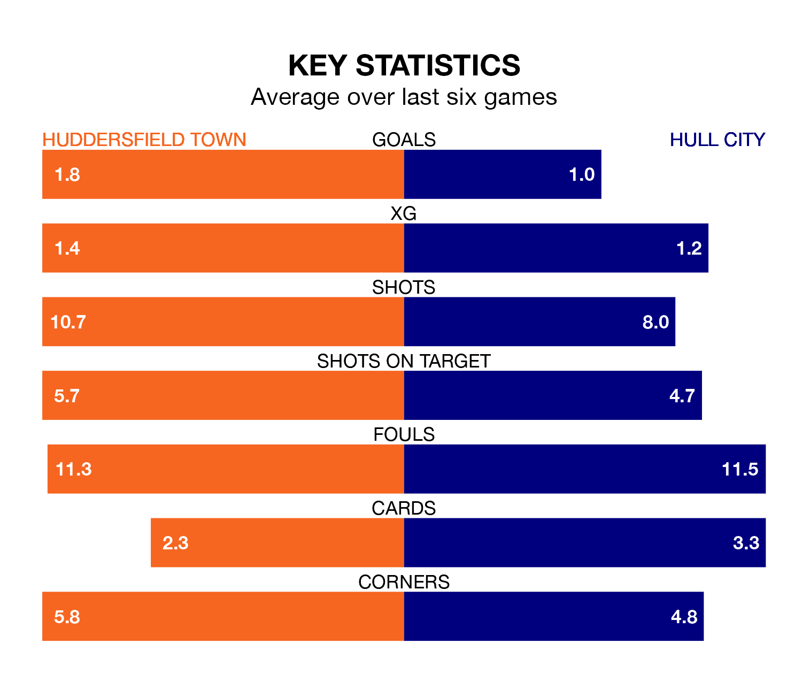

Huddersfield Town host Hull City on Saturday at the John Smith's Stadium in EFL Championship.
In their last league match, on Wednesday, Huddersfield beat Sunderland 1-0 at home, with their goal scored by Matthew Pearson.
Hull also won, 2-1 away at Rotherham United on Tuesday, with Jaden Philogene and Noah Ohio on the scoresheet.
In the last 10 years, Huddersfield and Hull have played each other on nine occasions. Huddersfield won five of them, Hull two, and they drew twice.
On average, the Terriers scored 1.4 goals and the Tigers 0.8 in those matches.
Their last meeting was on November 11, when Hull won 1-0 at home.
With 37 goals in 32 games so far this season, Huddersfield are scoring at below the league average rate with 1.2 goals per game. And they are conceding more than average, letting in 52 goals at a rate of 1.6 per game.
Hull, meanwhile, are above average scorers, with 1.5 goals per game, compared to a league average of 1.4. They have conceded 1.3 goals per game.
Town are 20th in the table after 32 games, of which they have won seven and drawn 13, earning 34 points.
City are 13 places ahead of the Terriers in seventh, with 14 wins and six draws putting them on 48 points.
The home team are in mixed form in EFL Championship, with two wins and three draws from their last six games.
With three wins and three losses over that period, the Tigers' form is similar – they have both taken nine points from 18.
Saturday's match will be refereed by Rebecca Welch, who has taken charge of seven EFL Championship games so far this season, issuing one red card and booking 35 players. He has not awarded any penalties.
The last Hull game Welch refereed was the 4-1 win at home against Rotherham United on November 28. He is yet to oversee a match featuring Huddersfield this season.
Updated: 13:04 (UTC), 16/02/24